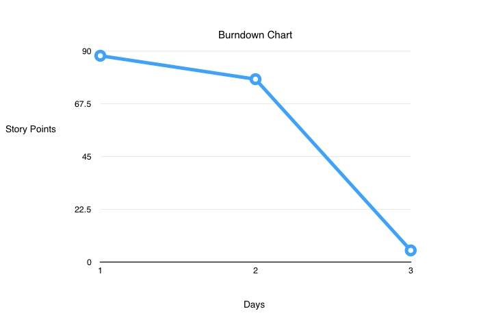

epic-snowflake
26th October 2015
member names and emails
- Paul Styslinger - paul.styslinger@yale.edu
- Venkatesh Jindal - venkatesh.jindal@yale.edu
- Amanda Roberts - amanda.roberts@yale.edu
- Alexandra Torresquimtero - alexandra.torresquimtero@yale.edu

stories we completed
- Reading two emails and assignment overview
- Delegate responsibilities
- Review agile methodology
- Set up an "organization" for your team on GitHub and make sure all your team members are part of it
- Clone the project starter
- Estimate story points for some or all of those
- Create a sprint 1 backlog (this might be rather light) Is all of this our backlog?
- Get your application running in your various "development" environments on cloud9 (likely one per developer, each of whom will be working independently and tracking their work via git) and in your “production” environment on Heroku.
- Establish deliverables for next week
- add sprint report 1 to HTML
- Set Up Communication / Meeting Times
- Make burndown chart (save as jpg)
- Sprint Review / Retrospective
- Create waffle.io account
stories on the backlog